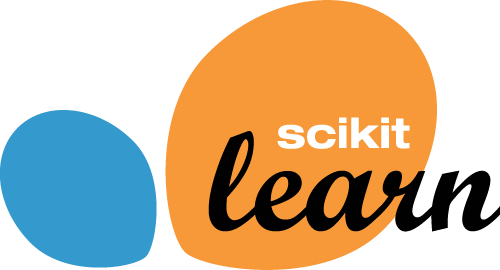
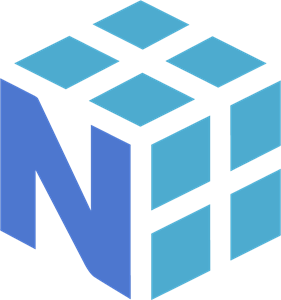

By utilizing computer vision techniques and libraries, the application detects and tracks hand movements, enabling users to play the Google Dino game without a keyboard. With precise hand gesture recognition, players can control the game intuitively, eliminating the need for traditional keyboard controls. Experience a new level of interactivity through this cutting-edge hand gesture recognition technology.
Hi, I'm Mert Bildirici

I'm a sophomore at Duke University studying Computer Science and Statistics. I am passionate about machine learning and its applications in sports, biology, and finance. I thrive on staying updated with the latest advancements in technology and love exploring new areas of knowledge. I am excited to leverage my skills and knowledge to contribute to innovative solutions that make a positive impact on society.
Currently, I am collaborating with two master's students at Duke University as a Mobile Application Developer. Together, we have designed, built, and deployed a cross-platform app that has been actively used since August 2023. This app, developed using Java for Android and Swift for iOS, serves as a valuable tool for Duke professors to post quizzes online, with over 500 active users benefiting from it.Our app leverages Firebase as the backend, featuring a robust question bank module. We've also integrated a feature that allows professors to release questions at their discretion. To enhance the user experience, we've implemented real-time notifications for both Android and iOS users. This was achieved through the use of Firebase Cloud Messaging (FCM) topic messaging and the establishment of a server, developed using Java and Spring Boot, to handle network requests efficiently.One of our notable achievements has been optimizing API calls, leading to a 15% reduction in response time. This optimization ensures that users can access and interact with the app's features swiftly and seamlessly.
Currently, I am collaborating with two master's students at Duke University as a Mobile Application Developer. Together, we have designed, built, and deployed a cross-platform app that has been actively used since August 2023. This app, developed using Java for Android and Swift for iOS, serves as a valuable tool for Duke professors to post quizzes online, with over 500 active users benefiting from it.Our app leverages Firebase as the backend, featuring a robust question bank module. We've also integrated a feature that allows professors to release questions at their discretion. To enhance the user experience, we've implemented real-time notifications for both Android and iOS users. This was achieved through the use of Firebase Cloud Messaging (FCM) topic messaging and the establishment of a server, developed using Java and Spring Boot, to handle network requests efficiently.One of our notable achievements has been optimizing API calls, leading to a 15% reduction in response time. This optimization ensures that users can access and interact with the app's features swiftly and seamlessly.
About Me
Raised in both the US and Turkey, I take immense pride in my identity as a global citizen. This upbringing has bestowed upon me a unique perspective that greatly enriches both my personal and professional life. I find great joy in exploring diverse cultures, embracing different viewpoints, and bridging the gaps between various communities.
My passion lies in the realm of technology, where I am constantly driven to explore new frontiers and harness the power of emerging innovations. It is through this exploration that I strive to create and develop innovative projects that push boundaries and make a positive impact. The intersection of Computer Science and Statistics serves as the perfect conduit for my ambitions, as it allows me to navigate a vast and ever-evolving landscape of knowledge and tools.
I am fascinated by the depth and intricacies of this field, as it constantly unveils new opportunities for growth and discovery. By staying at the forefront of technological advancements, I continuously equip myself with the skills and knowledge necessary to tackle complex challenges and drive meaningful change. The dynamic nature of Computer Science and Statistics fuels my insatiable curiosity and motivates me to push beyond conventional boundaries.
In high school, I had the privilege of attending Robert College, a G30 high school and the most prestigious educational institution in Turkey, with an acceptance rate of approximately 0.15%. During my time at Robert College, I not only gained a deeper appreciation for non-STEM fields but also cultivated essential skills in writing with clarity and precision, which have proven to be invaluable in my journey.
When I'm not working on my own projects, you'll likely find me at the gym, pool, soccer field, or indulging in hobbies like candle making and cooking. These activities bring me joy, balance, and allow me to explore my creativity outside the realm of technology.
My passion lies in the realm of technology, where I am constantly driven to explore new frontiers and harness the power of emerging innovations. It is through this exploration that I strive to create and develop innovative projects that push boundaries and make a positive impact. The intersection of Computer Science and Statistics serves as the perfect conduit for my ambitions, as it allows me to navigate a vast and ever-evolving landscape of knowledge and tools.
I am fascinated by the depth and intricacies of this field, as it constantly unveils new opportunities for growth and discovery. By staying at the forefront of technological advancements, I continuously equip myself with the skills and knowledge necessary to tackle complex challenges and drive meaningful change. The dynamic nature of Computer Science and Statistics fuels my insatiable curiosity and motivates me to push beyond conventional boundaries.
In high school, I had the privilege of attending Robert College, a G30 high school and the most prestigious educational institution in Turkey, with an acceptance rate of approximately 0.15%. During my time at Robert College, I not only gained a deeper appreciation for non-STEM fields but also cultivated essential skills in writing with clarity and precision, which have proven to be invaluable in my journey.
When I'm not working on my own projects, you'll likely find me at the gym, pool, soccer field, or indulging in hobbies like candle making and cooking. These activities bring me joy, balance, and allow me to explore my creativity outside the realm of technology.
Experience
Aug 2023 - Present | Durham, NC
Teaching Assistant @ Duke Statistical Science Department> Led discussion sections with 20 students, covering course content in R; graded attendance and assignments.> Mentored students and answered questions through weekly office hours and class discussion forums.
Teaching Assistant @ Duke Statistical Science Department> Led discussion sections with 20 students, covering course content in R; graded attendance and assignments.> Mentored students and answered questions through weekly office hours and class discussion forums.
May 2023 - Aug 2023 | Istanbul, Turkey
Software Engineer Intern @ Valensas> Developed a web application with React for PayPro that allows users to make purchases and expenses using a pre-authorized payment method, even in areas with limited internet connectivity.> Contributed to the development of a web-based interface for PayPro that enables users to view transaction history.> Created an admin panel using React Admin to efficiently manage and monitor flights and transactions.> Utilized Postman API to perform a range of flight-related tasks, including retrieving flight data through GET requests, creating and terminating flights using POST requests, and initiating provisioning processes for flights.> Created the login page for the application using React and JavaScript both for the web platform and the admin panel.> Leveraged the Multipeer Connectivity Framework to enable transaction history synchronization for flight attendants across all devices within the app.
Software Engineer Intern @ Valensas> Developed a web application with React for PayPro that allows users to make purchases and expenses using a pre-authorized payment method, even in areas with limited internet connectivity.> Contributed to the development of a web-based interface for PayPro that enables users to view transaction history.> Created an admin panel using React Admin to efficiently manage and monitor flights and transactions.> Utilized Postman API to perform a range of flight-related tasks, including retrieving flight data through GET requests, creating and terminating flights using POST requests, and initiating provisioning processes for flights.> Created the login page for the application using React and JavaScript both for the web platform and the admin panel.> Leveraged the Multipeer Connectivity Framework to enable transaction history synchronization for flight attendants across all devices within the app.
May 2022 - Aug 2022 | Durham, NC
Software Development Intern @ Recly> Developed solutions for critical bugs in Recly, a workout partner connection app written in React.> Enhanced the Messages section by message notifications and improved message synchronization using ReactNative.> Designed and implemented software features that improved the user experience and increased user retention by 40%.> Extended code so that users could sign in with international phone numbers, adding 200+ international users.
Software Development Intern @ Recly> Developed solutions for critical bugs in Recly, a workout partner connection app written in React.> Enhanced the Messages section by message notifications and improved message synchronization using ReactNative.> Designed and implemented software features that improved the user experience and increased user retention by 40%.> Extended code so that users could sign in with international phone numbers, adding 200+ international users.
Feb 2023 | Durham, NC
Machine Learning Engineer @ DAML Group> Working for the project AMP®-Parkinson's Disease Progression Prediction.> Developed a predictive model for MDS-UPDR scores, which measures the progression of Parkinson's disease.> Employed machine learning algorithms to analyze and interpret the data, including supervised and unsupervised learning techniques.> Utilized Python and libraries such as Scikit-learn, Pandas, and NumPy for data processing and model development.
Machine Learning Engineer @ DAML Group> Working for the project AMP®-Parkinson's Disease Progression Prediction.> Developed a predictive model for MDS-UPDR scores, which measures the progression of Parkinson's disease.> Employed machine learning algorithms to analyze and interpret the data, including supervised and unsupervised learning techniques.> Utilized Python and libraries such as Scikit-learn, Pandas, and NumPy for data processing and model development.
March 2023 | Istanbul, Turkey (remote)
Data Analyst Intern @ Ataol Group> Conducted software research and provided benefit reports on platforms the company wants to use.> Organized software partnership meetings for company leadership.> Wrote weekly data articles for the company's social media.
Data Analyst Intern @ Ataol Group> Conducted software research and provided benefit reports on platforms the company wants to use.> Organized software partnership meetings for company leadership.> Wrote weekly data articles for the company's social media.
Selected Projects
DinoGame
Technical Skills
Languages
Libraries



Miscellaneous